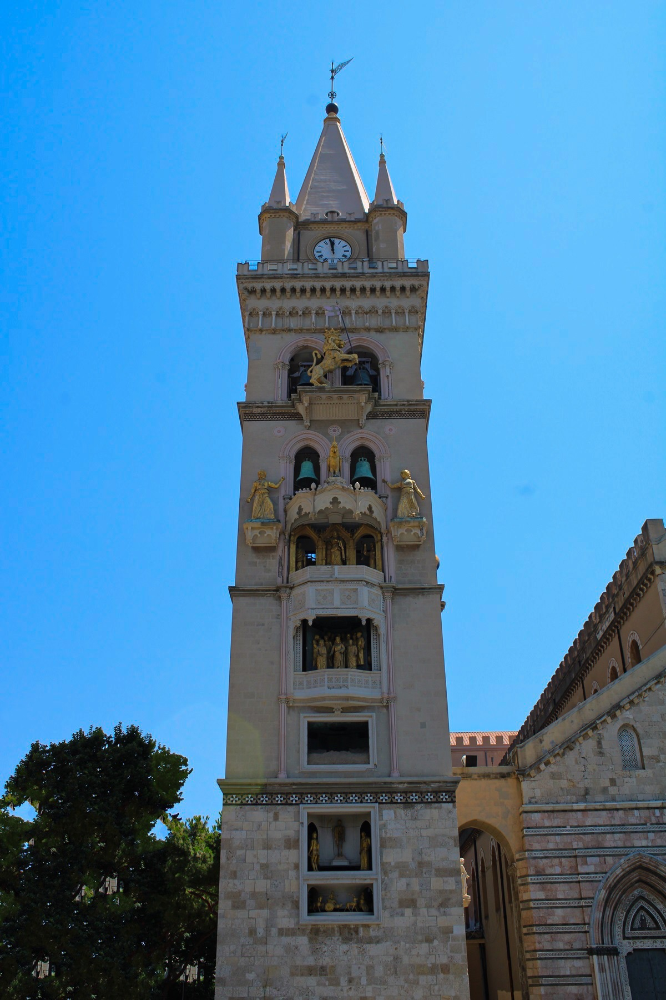
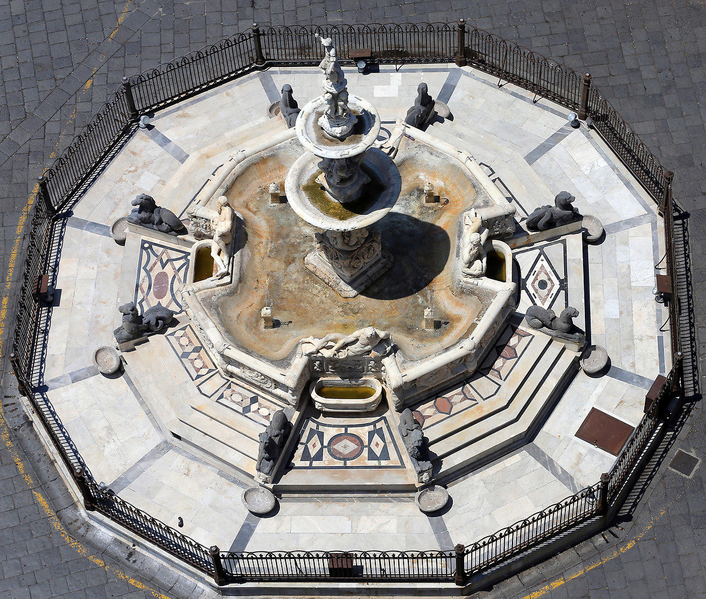

Piazza del Duomo a Messina è il simbolo della rinascita cittadina dopo il terremoto del 1908. Cuore spirituale e civile della "Porta della Sicilia", la piazza affonda le sue radici nell'epoca normanna, ma il suo aspetto attuale è frutto di una ricostruzione monumentale che ha saputo integrare i pochi resti antichi superstiti con l'architettura eclettica del Novecento.
Oggi lo spazio si presenta come un ampio salotto urbano dove il mito di Orione, celebrato dalla fontana rinascimentale del Montorsoli, incontra l'ingegneria moderna del Campanile. Quest'ultimo, con il suo celebre orologio astronomico del 1933, trasforma ogni giorno la piazza in un teatro a cielo aperto, rendendola il luogo d'identità dove la memoria storica della città si fonde con lo spettacolo della meccanica.

Cosa Vedere in piazza:

Il Campanile: con l'orologio astronomico e i suoi automi dorati.

Il Duomo: imponente cattedrale normanna ricostruita con splendidi mosaici.

La fontana di Orione: capolavoro del Cinquecento dedicato al fondatore mitico.